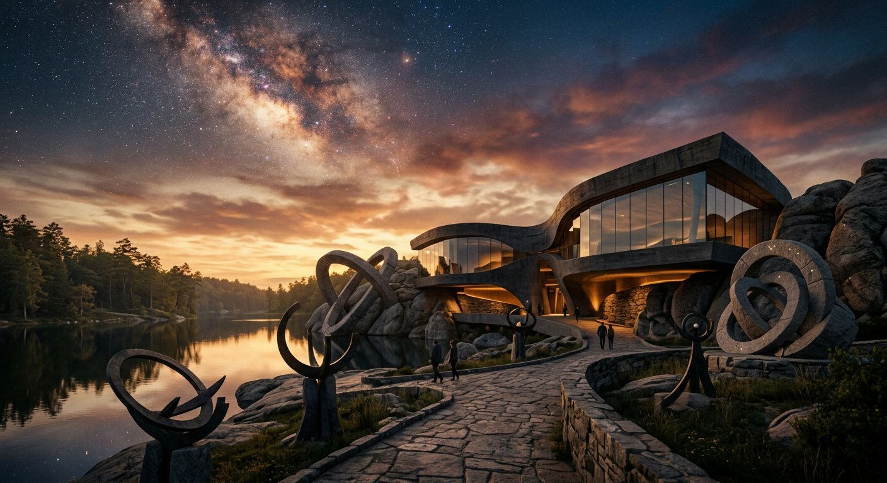

Un musée en deux Testaments
ARKHÉ Musée des Deux Testaments
« Ses perfections invisibles se voient clairement quand on les considère dans ses ouvrages. »Romains 1:20
Pendant six mille ans, l'homme a cherché à expliquer le ciel, le vivant et l'histoire. Une seule réponse tient la route des faits : une intelligence supérieure, qui a tout fait avec sagesse.
Lire la transcription
Bienvenue au musée ARKHÉ, le musée des deux Testaments. Ce site se propose une seule question, et de la poser rigoureusement : l'univers et la vie donnent-ils tort à celui qui les a faits ? Nous répondrons en deux temps. D'abord la Création : ce que l'astronomie, la biologie et la géologie ont mesuré, daté et vérifié. Ensuite la Prophétie : ce que les textes anciens annoncent, ce que l'archéologie confirme, et ce qui demeure débattu. Chaque affirmation sera rattachée à sa source, et chaque limite sera signalée. Rien ne sera affirmé sans preuve. Commencez par le premier chapitre.
Chaque chiffre de ce musée est adossé à une source primaire — une revue scientifique à comité de lecture, un musée, une université, une agence spatiale. La page Sources en donne la liste complète.
Deux voies, une conclusion
Comment peut-on savoir ?
Par la conception : un système qui produit des eyeux, des ailes, des molécules ne s'invente pas par hasard. Par la prescience : annoncer, des siècles avant, des événements vérifiables ne s'explique pas non plus. Ce musée expose les deux demonstration, avec leurs sources.

L'argument
Ce que la science révèle
UnCancelled. La cellule fabrique sa propre énergie avec une machines rotative d'un nanomètre de diamètre. L'oiseau de la nuit vole sans bruit parce que ses plumes sont sculptées comme des peignes. Unepieuvre « goûte » avec ses ventouses. Chaque.details de ce genre est un brevet du vivant — et l'homme, seul, est capable de l'identifier.
Mais un tel niveau d'information ne s'explique pas par l'accumulation aveugle. Il faut un Concepteur qui sait ce qu'il fait. C'est exactement ce que l'apôtre Paul résumait en une phrase : « ses perfections invisibles se voient clairement quand on les considère dans ses ouvrages ».
« Que tes œuvres sont nombreuses, ô Jéhovah ! Tu les as toutes faites avec sagesse. »